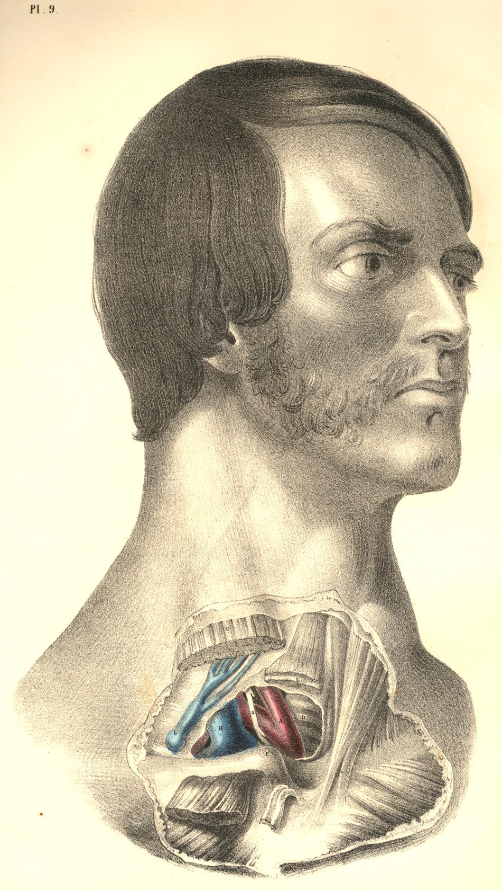
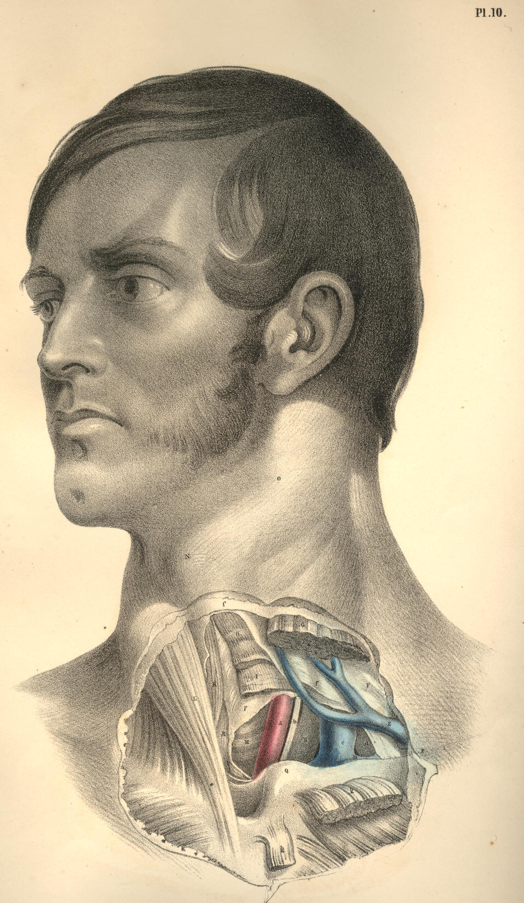

COMMENTARY ON PLATES 9 & 10.
THE SURGICAL DISSECTION OF THE STERNO-CLAVICULAR OR TRACHEAL
REGION, AND THE RELATIVE POSITION OF ITS MAIN BLOODVESSELS,
NERVES, &c.
The law of symmetry governs the development of all structures which
compose the human body; and all organized beings throughout the animal
kingdom are produced in obedience to this law. The general median line
of the human body is characterized as the point of fusion of the two
sides; and all structures or organs which range this common centre are
either symmetrically azygos, or symmetrically duplex. The azygos organ
presents as a symmetrical unity, and the duplex organ as a symmetrical
duality. The surgical anatomist takes a studious observation of this law
of symmetry; and knowing it to be one of general and almost
unexceptional occurrence, he practises according to its manifestation.
The vascular as well as the osseous skeleton displays the law of
symmetry; but while the osseous system offers no exception to this law,
the vascular system offers one which, in a surgical point of view, is of
considerable importance--namely, that behind the right sterno-clavicular
articulation, C, Plate 9, is found the artery, A, named innominate, this
being the common trunk of the right common carotid and subclavian
vessels; while on the left side, behind the left sterno-clavicular
junction, Q, Plate 10, the two vessels (subclavian, B, and carotid, A,)
spring separately from the aortic arch. This fact of asymmetrical
arrangement in the arterial trunks at the fore part of the root of the
neck is not, however, of invariable occurrence; on the contrary,
numerous instances are observed where the arteries in question, on the
right side as well as the left, arise separately from the aorta; and
thus Nature reverts to the original condition of perfect symmetry as
governing the development of even the vascular skeleton. And not
unfrequently, as if to invite us to the inquiry whether a separate
origin of the four vessels (subclavian and carotid) from the aorta, or a
double innominate condition of the vessels, were the original form with
Nature, we find her also presenting this latter arrangement of them. An
innominate or common aortic origin may happen for the carotid and
subclavian arteries of the left side, as well as the right. Hence,
therefore, while experience may arm the judgment with a general rule,
such generality should not render us unmindful of the possible
exception.
When, as in Plate 9, A, the innominate artery rises to a level with C,
the right sterno-clavicular junction, and when at this place it
bifurcates, having on its left side, D, the trachea, and on its right
side, B, the root of the internal jugular vein, together with a, the
vagus nerve, the arterial vessel is said to be of normal character, and
holding a normal position relative to adjacent organs. When, as in Plate
10, A, the common carotid, and B, the subclavian artery, rise separately
from the aortic arch to a level with Q, the left sterno-clavicular
articulation, the vessels having M, the trachea, to their inner side,
and C D, the junction of the internal jugular and subclavian
veins, to
their outer side, with b, the
left vagus nerve, between them, then the
arterial vessels are accounted as being of normal character, and as
holding a normal relative position. Every exception to this condition of
A, Plate 9, or to that of A B, Plate 10, is said to be abnormal or
peculiar, and merely because the disposition of the vessels, as seen in
Plates 9 and 10, is taken to be general or of more frequent occurrence.
Now, though it is not my present purpose to burden this subject of
regional anatomy with any lengthy inquiry into the comparative meaning
of the facts, why a common innominate trunk should occur on the right of
the median line, while separate arterial trunks for the carotid and
subclavian arteries should spring from the aorta on the left of this
mid-line, thus making a remarkable exception to the rule of symmetry
which characterizes all the arterial vessels elsewhere, still I cannot
but regard this exceptional fact of asymmetry as in itself expressing a
question by no means foreign to the interests of the practical.
In the abstract or general survey of all those peculiarities of length
to which the innominate artery, A, Plate 9, is subject, I here lay it
down as a proposition, that they occur as graduated phases of the
bicleavage of this innominate trunk from the level of A, to the aortic
arch, in which latter phasis the aorta gives a separate origin to the
carotid and subclavian vessels of the right side as well as the left. On
the other hand, I observe that the peculiarities to the normal separate
condition of A and B, the carotid and subclavian arteries of Plate 10,
display, in the relationary aggregate, a phasial gradation of A and B
joining into a common trunk union, in which state we then find the aorta
giving origin to a right and left innominate artery. Between these two
forms of development--viz., that where the four vessels spring
separately from the aortic arch, and that where two innominate or
brachio-cephalic arteries arise from the same--may be read all the sum
of variation to which these vessels are liable. It is true that there
are some states of these vessels which cannot be said to be naturally
embraced in the above generalization; but though I doubt not that these
might be encompassed in a higher generalization; still, for all
practical ends, the lesser general rule is all-sufficient.
In many instances, the innominate artery, A, Plate 9, is of such
extraordinary length, that it rises considerably (for an inch, or even
more) above the level of C, the sternal end of the clavicle. In other
cases, the innominate artery bifurcates soon after it leaves the first
part of the aortic arch; and between these extremes as to length, the
vessel varies infinitesimally.
The innominate artery lies closer behind the right sterno-clavicular
junction than the left carotid or subclavian arteries lie in relation to
the left sterno-clavicular articulation; and this difference of depth
between the vessel of the right side and those of the left is mainly
owing to the form and direction of the aortic arch from which they take
origin. The aortic arch ranges, not alone transversely, but also from
before backward, and to the left side of the dorsal spine; and
consequently, as the innominate artery, A, Plate 9, springs from the
first or fore part of the aorta, while the left carotid and subclavian
arteries arise from the second and deeper part of its arch, the vessels
of both sides rising into the neck perpendicularly from the root in the
thorax, will still, in the cervical region, manifest a considerable
difference as to antero-posterior depth. The depth of the left
subclavian artery, B, Plate 10, from cervical surface, is even greater
than that of the left common carotid, A, Plate 10, and this latter, at
its root in the aortic arch, is deeper than the innominate artery. Both
common carotids, A A, Plates 9 and 10, hold nearly the same
antero-posterior depth on either side of the trachea, M, Plate 10, and
D, Plate 9. Although the relative depth of the arterial vessels on both
sides of the trachea is different, still they are covered by an equal
number of identical structures, taking the same order of superposition.
On either side of the episternal cervical pit, which, even in the
undissected body of male or female, infant or adult, is always a
well-marked surgical feature, may be readily recognised the converging
sternal attachments of the sterno-mastoid muscles, L G, Plate 10; and
midway between these symmetrical muscular prominences in the neck, but
holding a deeper level than them, is situated that part of the trachea
which is generally the subject of the operation of tracheotomy. The
relative anatomy of the trachea, M, Plate 10, D, Plate 9, at this
situation requires therefore to be carefully considered. The trachea is
said to incline rather to the right side of the median line; but perhaps
this observation would be more true to nature if it were accompanied by
the remark, that this seeming inclination to the right side is owing to
the fact, that the innominate artery, A, Plate 9, lies obliquely over
its fore part, near the sternum. However this may be, it certainly will
be the safer step in the operation to regard the median position of the
trachea as fixed, than to encroach upon the locality of the carotid
vessels; and to make the incision longitudinally and exactly through the
median line, while the neck is extended backwards, and the chin made to
correspond with the line of incision. And when the operator takes into
consideration the situation of the vessel A, Plate 9, and A, Plate 10,
at this region of the neck, he will at once own to the necessity of
opening the trachea, D, Plate 9, M, Plate 10, at a situation nearer the
larynx than the point marked in the figures. The course taken by the
common carotid arteries is, in respect to the trachea, divergent from
below upwards; and as these vessels will consequently be found to stand
wider apart at the level of K, I, Plate 10, than they do at the level of
M, Plate 10, so the farther upwards from the sternum we choose the point
at which to open the trachea, the less likely are we to endanger the
great arterial vessels.
In addition to the fact, that the carotid arteries at an inch above the
sternum lie nearer the median line than they do higher up in the neck,
it should always be remembered, that the trachea itself is situated much
deeper at the point M, Plate 10, D, Plate 9, than it is opposite the
points F and K of the same figures. The laryngo-tracheal line is, in the
lateral view of the neck, downwards and backwards, and therefore it will
be found always at a considerable depth from cervical surface, as it
passes behind the first bone of the sternum, midway between both
sterno-mastoid muscles.
In the operation of tracheotomy, the cutting instrument divides the
following named structures as they lie beneath the common integument: If
the incision be made directly upon the median line, the muscles F,
sterno-hyoid, and E, sterno-thyroid, Plate 9, are not necessarily
divided, as these structures and their fellows hold a somewhat lateral
position opposite to each other. Beneath these muscles and above them,
thus encasing them, the cervical fascia, f f, Plate 10, is required to
be divided, in order to expose the trachea. Beneath f f the cervical
fascia, will next be felt the rounded bilobed mass of the thyroid body,
lying on the forepart of the trachea; above the thyroid body, the
cricoid and some tracheal cartilaginous rings will be felt; and since
the thyroid body varies much as to bulk in several individuals of the
same and different sexes, as also from a consideration that its
substance is traversed by large arterial and venous vessels, it will be
therefore preferable to open the trachea above it, than through it or
below it.
On the forepart of the tracheal median line, either superficial to, or
deeper than, the cervical fascia, the tracheotomist occasionally meets
with a chain of lymphatic glands or a plexus of veins, which latter,
when divided, will trammel the operation by the copious haemorrhage
which all veins at this region of the neck are prone to supply, owing to
their direct communication with the main venous trunks of the heart; and
not unfrequently the inferior thyroid artery overlies the trachea at the
point D, Plate 9, when this thyroid vessel arises directly from the arch
of the aorta, between the roots of the innominate and left common
carotid, or when it springs from the innominate itself. The inferior
thyroid vein, sometimes single and sometimes double, overlies the
trachea at the point D, Plate 9, when this vein opens into the left
innominate venous trunk, as this latter crosses over the root of the
main arteries springing from the aorta.
Laryngotomy is, anatomically considered, a far less dangerous operation
than tracheotomy, for the above-named reasons; and the former should
always be preferred when particular circumstances do not render the
latter operation absolutely necessary. In addition to the fact, that the
carotid arteries lie farther apart from each other and from the median
place--viz., the crico-thyroid interval, which is the seat of
laryngotomy--than they do lower down on either side of the trachea, it
should also be noticed that the tracheal tube being more moveable than
the larynx, is hence more liable to swerve from the cutting instrument,
and implicate the vessels. Tracheotomy on the infant is a far more
anxious proceeding than the same operation performed on the adult;
because the trachea in the infant's body lies more closely within the
embrace of the carotid arteries, is less in diameter, shorter, and more
mobile than in the adult body.
The episternal or interclavicular region is a locality traversed by so
many vitally important structures gathered together in a very limited
space, that all operations which concern this region require more steady
caution and anatomical knowledge than most surgeons are bold enough to
test their possession of. The reader will (on comparing Plates 9 and 10)
be enabled to take account of those structures which it is necessary to
divide in the operation required for ligaturing the innominate artery,
A, Plate 9, or either of those main arterial vessels (the right common
carotid and subclavian) which spring from it; and he will also observe
that, although the same number and kind of structures overlie the
carotid and subclavian vessels, A B, of the left side, Plate 10, still,
that these vessels themselves, in consequence of their separate
condition, will materially influence the like operation in respect to
them. An aneurism occurring in the first part of the course of the right
subclavian artery, at the locality a,
Plate 9, will lie so close to the
origin of the right common carotid as to require a ligature to be passed
around the innominate common trunk, thus cutting off the flow of blood
from both vessels; whereas an aneurism implicating either the left
common carotid at the point A, or the left subclavian artery at the
point B, does not, of course, require that both vessels should be
included in the same ligature. There seems to be, therefore, a greater
probability of effectually treating an aneurism of the left
brachio-cephalic vessels by ligature than attaches to those of the right
side; for if space between collateral branches, and also a lesser
caliber of arterial trunk, be advantages, allowing the ligature to hold
more firmly, then the vessels of the left side of the root of the neck
manifest these advantages more frequently than those of the right, which
spring from a common trunk. Whenever, therefore, the "peculiarity" of a
separate aortic origin of the right carotid and subclavian arteries
occurs, it is to be regarded more as a happy advantage than otherwise.
DESCRIPTION OF PLATES 9 & 10.
PLATE 9.
A. Innominate artery, at its point of bifurcation.
B. Right internal jugular vein, joining the subclavian vein.
C. Sternal end of the right clavicle.
D. Trachea.
E. Right sterno-thyroid muscle, cut.
F. Right sterno-hyoid muscle, cut.
G. Right sterno-mastoid muscle, cut.
a. Right vagus nerve, crossing
the subclavian artery.
b. Anterior jugular vein,
piercing the cervical fascia to join the
subclavian vein.

Plate 9
PLATE 10.
A. Common carotid artery of left side.
B. Left subclavian artery, having b,
the vagus nerve, between it and A.
C. Lower end of left internal jugular vein, joining--
D. Left subclavian vein, which lies anterior to d, the scalenus anticus
muscle.
E. Anterior jugular vein, coursing beneath sterno-mastoid muscle and
over the fascia.
F. Deep cervical fascia, enclosing in its layers f f f, the several
muscles.
G. Left sterno-mastoid muscle, cut across, and separated from g g, its
sternal and clavicular attachments.
H. Left sterno-hyoid muscle, cut.
I. Left sterno-thyroid muscle, cut.
K. Right sterno-hyoid muscle.
L. Right sterno-mastoid muscle.
M. Trachea.
N. Projection of the thyroid cartilage.
O. Place of division of common carotid.
P. Place where the subclavian artery passes beneath the clavicle.
Q. Sternal end of the left clavicle.

Plate 10
COMMENTARY ON PLATES 11
& 12